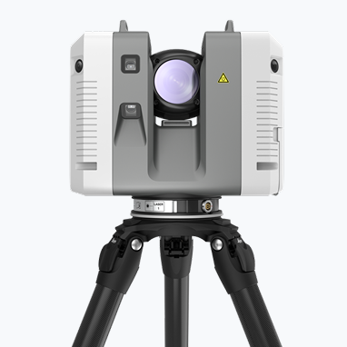
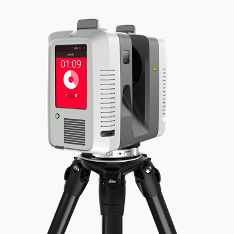
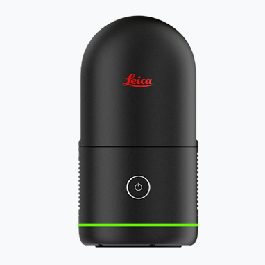
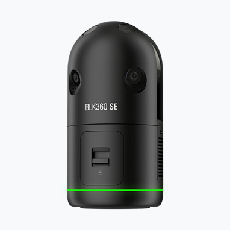
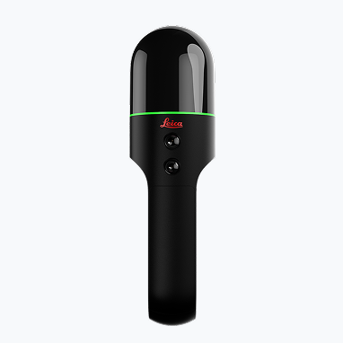
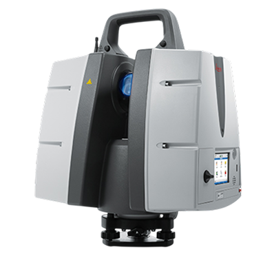

advanced technology that captures the exact size, spatial position, colour, and Shape of environments using laser pulses that travel to surfaces and reflect back to the scanner
3D Laser scanners are an advanced technology that captures the exact size, spatial position, colour, and Shape of environments using laser pulses that travel to surfaces and reflect back to the scanner; by timing these pulses, the scanner computes accurate distance measurements for each point, and this forms a highly dense point cloud data and captures a high-definition 360-degree panoramic image
This has been widely used in 3D scanning of AEC, 3D scanning of Plant, 3D scanning of Factory, 3D scanning of Heritage Buildings, 3D scanning of Movie Sets, 3D Scanning of Shipbuilding, for Digital Twinning, Reality Capture, and As-Built Capture requirements.
At WildplantTS, as an authorised distributor of Leica Geosystems, we support clients in demonstrating the Leica Reality Capture Laser Scanner across India and provide post-sales support.
Emits laser pulses
Laser hits objects and reflects back
Return time is measured, and
the distance is calculated
Angles are recorded, X, Y, Z
points are generated
Millions of points form
a 3D point cloud
Leica Geosystems Industry Leading Solutions





